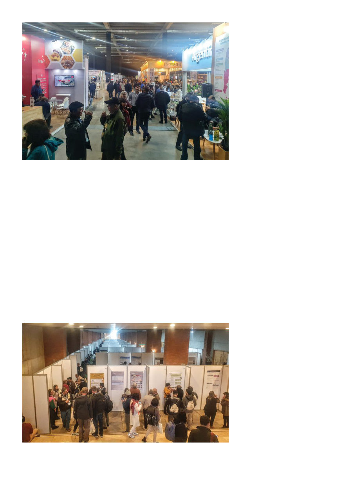

American Bee Journal
1202
would have indisputably been the
better decision.)
More than 3800 people attended the
conference. Of those, about 40% came
from Chile, 70% came from Latin
America in general, and 154 people
attended from the United States at-
tended, of whom I think I met maybe
three. Of the remaining quarter of the
attendees there were representatives
from all over the world (89 countries
altogether).
In addition to the presentations,
there were walls set up in the halls
to give room for 430 posters detailing
research for which there hadn’t been
time for presentations, and usually
during peak hours (lunchtime) the
poster’s author could be found near it
to answer questions.
One gets a good feel for the general
state of things around the world while
at Apimondia, and the general state
of things seems to be this: Small hive
beetle is spreading into Europe via It-
aly, and has recently been detected in
several countries in Central America;
a mysterious foulbrood-like disease
has been spreading in Iran (see the
research of Dr. Pegah Valizadeh); and
varroa has been spreading in Austra-
lia for a year now. (Incidentally two
weeks later, the day I’m writing this,
Australia has officially given up at-
tempting to eradicate varroa.)
I’ll mention as examples some of the
presentations I found interesting, but
of course one can only be in one place
at a time and I spent more time in bee
biology and rural development than
technology or apitherapy. There was
an interesting presentation (Dr. Kay-
lin Kleckner) on the age at which bees
consume pollen; it seems the nurse
bees prefer fresh pollen while the
older bees prefer the older bee bread,
which has more of an amino acid that
supports flight (proline), and nurse
bees seem uninterested in pollen
substitute patties. A study of queen
rearing success in different-sized nuc
boxes by Dr. Fani Hatjina showed best
success in half-Langstroth size boxes.
Dr. M. Marta Guarna presented about
how analyzing the gut flora of queen
bees (via their defecation) can tell us
if they’ve suffered heat stress which
would reduce their quality. I learned
bees can swim (I thought bees in wa-
ter were always in the act of drown-
ing) and will preferentially swim
toward a darker area unless they’ve
been exposed to pesticides.
As Randy Oliver (one of the few
Americans I ran into there) said,
“Overall, the feedback that I got
from many beekeepers was that the
conference was more oriented to
scientists than to beekeepers.” And
I would tend to agree, I enjoy hear-
ing all the latest research but I’m not
sure knowing the swimming hab-
its of bees or at what age they most
like pollen patties will have much
effect on my day-to-day. Probably
the most practical things for regular
beekeeping were further evidence of
how much even a little temperature
stress is detrimental to queen perfor-
mance (Marta Guarna), that requeen-
ing by simply putting a new queen
cell in the super without killing the
old queen only works 4% of the time
(Shelley Hoover), and delaying nup-
tial flights with a labyrinth entrance
is much more effective than by cool-
ing the hive (I can’t recall the authors
or seem to find it in the program).
Randy’s roundup of the main topics
of discussion consists of: “Fake hon-
ey depressing honey price; climate
change [I also noticed this is now
being discussed as an obvious and
impactful fact]; overstocking of bees
over the landscape carrying capacity;
better pollen subs to account for the
above; sustainable, non-contaminat-
ing varroa control measures, and the
failure of amitraz; selective breeding
for mite resistance; and use of api-
therapy around the world — honey,
propolis, venom, and other bee prod-
ucts for medicinal uses.”
I really hate to say something so cli-
che and cheesy, but with all such con-
ferences I’ve found that the friends
I’ve made there have been a highlight.
From past conferences I’ve met and
kept in contact with experts in various
subjects, and I’ve benefited from be-
In addition to the presentations, 430 research posters were displayed in the halls,
staffed when possible by the authors.
The Expo featured over 120 exhibitors from around the world.